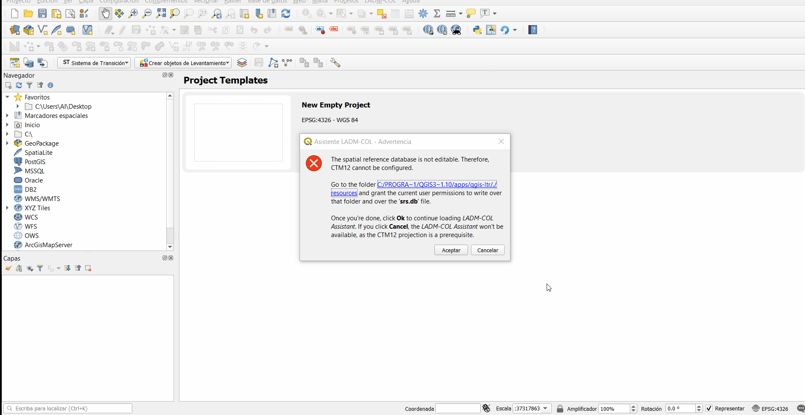

Instalación¶
Requerimientos mínimos¶
Para usar el Asistente LADM_COL se requiere:
Sistema Operativo: - Windows 10 - GNU/Linux - macOS
Software base: - QGIS v3.10.0-A Coruña o superior - Java v1.8 - PostgreSQL 9.5 o superior (funciona PostgreSQL 10, 11 o 12). - PostGIS 2.4 o superior.
Complementos de QGIS (al instalar el Asistente LADM-COL usando el Administrador de Complementos de QGIS, las dependencias se instalarán automáticamente): - QGIS Model Baker v6.1.1.4. - MapSwipe Tool v1.2
Proceso de instalación¶
Es necesario tener el Software QGIS versión 3 instalado, recomendamos usar la versión 3.10.0-A Coruña o superior, para obtener este diríjete a QGIS
El proceso puede ser observado graficamete en el siguiente GIF:

Asegúrate de tener la última versión del plugin QgisModelBaker, el Asistente LADM_COL depende de este plugin para funcionar, de lo contrario este mensaje aparecerá:

Si tienes un error, puedes instalar el plugin QgisModelBaker como en el siguiente gif:

Habilitar proyección con Origen Único Nacional¶
Para poder usar la proyección con Origen Único Nacional antes de que esté oficialmente en la base de datos de Sistemas de Referencia de QGIS, debemos permitir que el Asistente LADM-COL configure dicha proyección.
Para ello, basta con otorgar estos dos permisos de escritura al usuario con el cual usamos QGIS:

{kind=link}